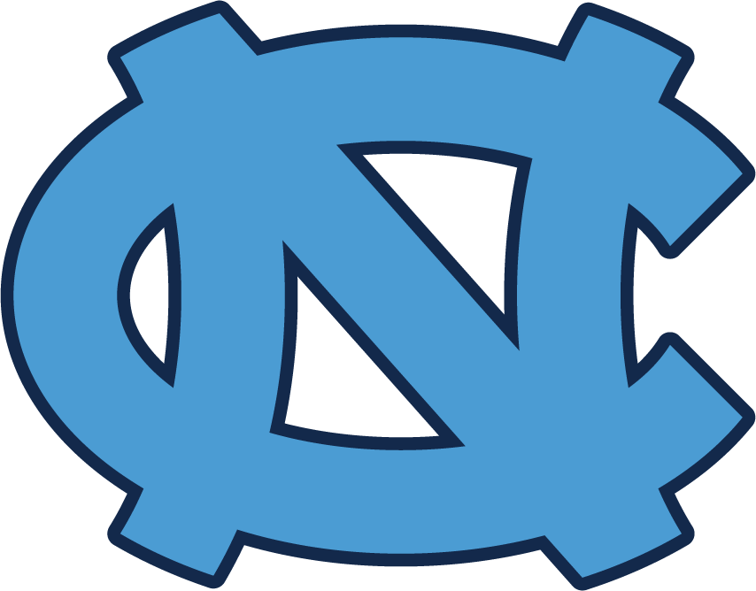
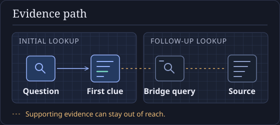
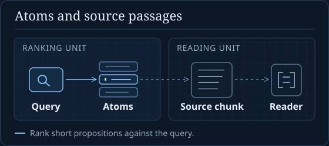
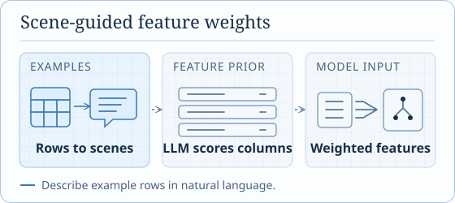
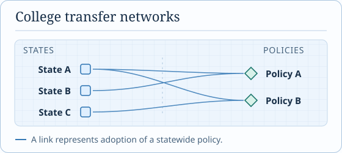

GitHub
@ArthurQQQQ
-
MULTIPASS
Multi-hop retrieval for long-context memory
-
Skill Editor
A local workspace for agent skills

Honors Carolina undergraduate at UNC–Chapel HillI study how agents learn continually from experience and stay reliable over long horizons.
I study computer science and economics, with a minor in mathematics.

@ArthurQQQQ
Multi-hop retrieval for long-context memory
A local workspace for agent skills
Publications and citations
ICML 2026 · Failure Modes of Agentic AI
ICML 2026 · Graph Foundation Models Workshop
Uses a bridge clue to guide a second retrieval pass and recover evidence missed on the first pass.
A single pass finds the first clue but misses the bridge.

Ranks fine-grained propositions, then retrieves the complete source passages for the model to read.

Turns table rows into written scenes and uses an LLM to weight features for a standard tabular model.

Analyzes statewide transfer policies and bilateral agreements between U.S. colleges.

A local workspace for finding, comparing, and maintaining agent skills.